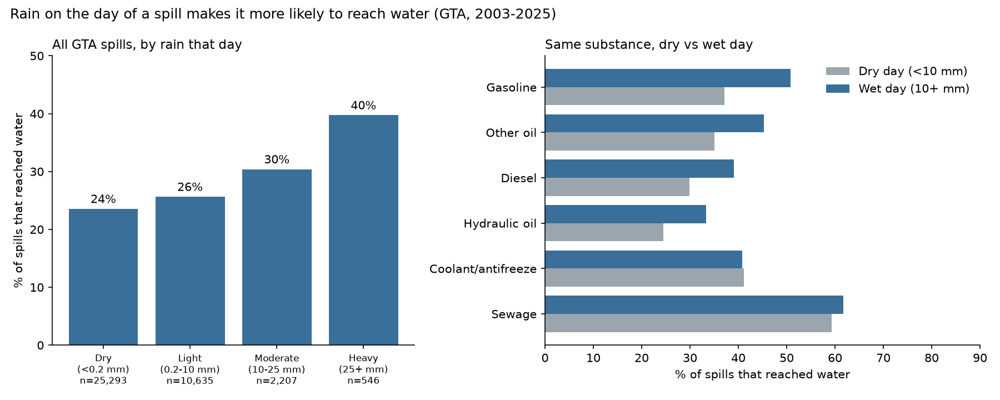
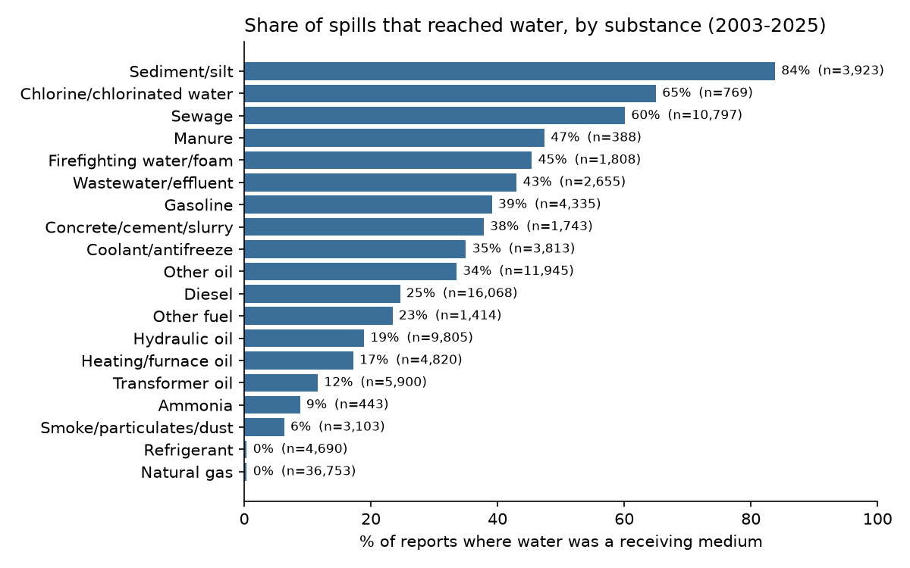
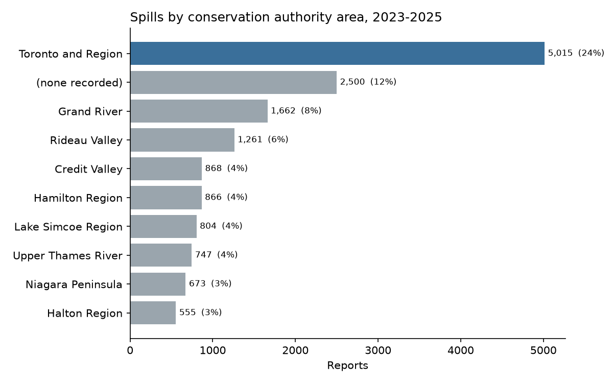
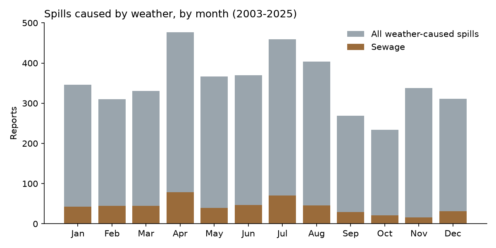
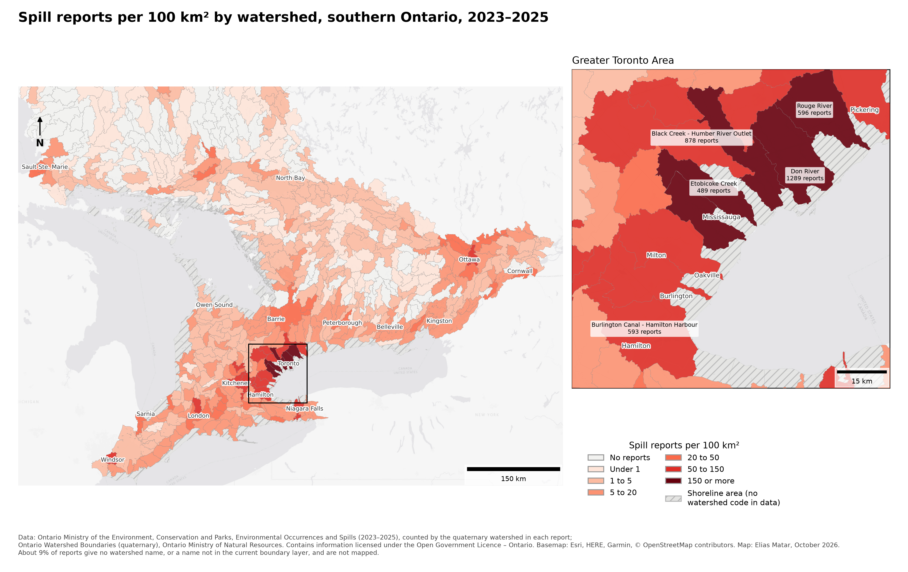

06 / Personal project · Python · SQL · open data · October 2026
When it rains, spills reach water more often
Ontario’s Spills Action Centre publishes every spill reported to it. I built a Python pipeline that downloads 23 years of reports (146,413, from 2003 to 2025), cleans and merges them into one SQLite database, and answers questions with SQL: what is spilled, why, and where it ends up. The files were messy: four files, three layouts, three date formats and two text encodings, with free-text substance names that had to be grouped.
I then linked GTA spills to daily rainfall at Toronto Pearson from Environment Canada’s open-data API. On dry days, 24% of spills reached water. On days with 25 mm or more of rain, 40% did, and the share rises step by step with the rain. Comparing the same substance, gasoline, diesel and oil spills were about 1.3 times as likely to reach water on wet days. Sewage and coolant spills didn’t change.
For response, that means a fuel or oil spill during rain leaves less time before it is in a creek. The next step is to estimate that time directly, using creek-flow data to see how fast a spill would travel downstream at normal flow and at storm flow.
Where this is going. The data says where and when, not the path: how a spill on a road gets from the curb to Lake Ontario. Enough reports, mapped, show where a growing city needs to be ready, which roads, ditches and storm sewers carry spills to water fastest, and where barriers that catch them first would do the most good. That path question is the bigger project this is a first step toward, and it depends on people reporting spills.




Where the reports are. Since 2023 each report names its watershed. I joined the counts to the Province’s watershed boundaries and divided by area, because a big watershed collects more reports just by being big. Per square kilometre, the Don River watershed has the most spill reports in Ontario (352 per 100 km²), followed by the lower Humber, Etobicoke Creek and the Rouge, all in Toronto.

Limits. One rain gauge stands in for the whole GTA, report dates are not always spill dates, and the result is an association, not proof of cause. Comparing the same substance helps, but doesn’t rule out other differences between rainy-day and dry-day spills. Reporting practices also changed over the 23 years.
Data sources.
Ontario Ministry of the Environment, Conservation and Parks. (2026). Environmental Occurrences and Spills [Data set]. Ontario Data Catalogue. Open Government Licence – Ontario. data.ontario.ca/dataset/environmental-occurrences-and-spills
Environment and Climate Change Canada. (2026). Daily climate observations, Toronto Pearson International Airport (Climate IDs 6158733 and 6158731) [Data set]. Open Government Licence – Canada. api.weather.gc.ca/collections/climate-daily
Ontario Ministry of Natural Resources. (2026). Ontario Watershed Boundaries (OWB) [Data set]. Land Information Ontario. Open Government Licence – Ontario. geohub.lio.gov.on.ca
Downloaded October 13, 2026. File checksums, the rainfall data and every results table are published with the code, so anyone can check that the data matches the official sources.
Built with Claude (Anthropic) as a coding assistant. I chose the question and the data, checked the cleaning and the results, and wrote the conclusions.